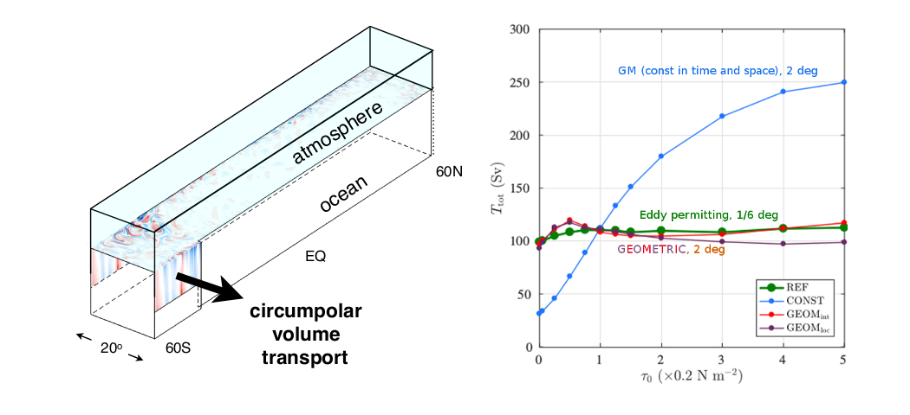
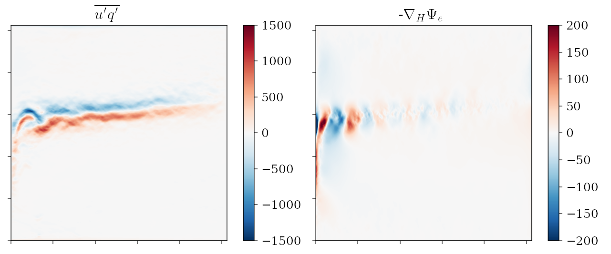

OCEAN MODELLING AND FLUIDS GROUP
Research Topics
Here you can find some of the research projects we have been involved in to get a sense of the kind of approach we take and tools we use, roughly organised by theme.
Eddy parameterisation
A part of studying eddy/wave-mean flow interaction concerns parameterisation, i.e. representation of sub-grid physics in models. At present we have a focus on eddy energy constrained mesoscale eddy parameterisations associated with baroclinic instabilities (cf. eddies that are at mesoscale lengths, which do not necessarily have to come from baroclinic instability). In particular, we concentrate on developing, implementing and assessing the impact of the GEOMETRIC scheme. So far we have GEOMETRIC implemented in MITgcm (w/ James Maddison), NEMO (w/ Gurvan Madec) and MOM6 (NCAR branch, largely thanks to Scott Bachman).
{kind=link}
One topic we are looking into is on the application of machine learning algorithms for learning about eddy flux and mean state relations, which is central to eddy parameterisation. A technical complication however arises from the fact that rotational fluxes play no role in the dynamics. The questions are how do we get rid of it, do we actually need to get rid of it, and if so what benefits does doing so afford?
{kind=link}
Inverse methods + state estimates
Chaotic/turbulent stirring and transport
Theoretical Fluid Dynamics
 We have a particular focus on shear instabilities, particularly with baroclinic instabilities (in the geophysical as well as astrophysical context), and interaction of waves as an explanation to instability. One current focus is on baroclinic equilibration and baroclinic lifecycles. While in some sense these are rather old topics, open and fundamental questions remain, such as "can we predict the equilibration state given initial state", or "what are the mechanisms governing equilibration", even within an at-first-sight-simple spindown problem in a quasi-geostrophic two layer system. Other questions, such as the extent of quasi-linear control on the nonlinear dynamics, and mechanistic explanations of the barotropic governor mechanism, are also being pursued.
We have a particular focus on shear instabilities, particularly with baroclinic instabilities (in the geophysical as well as astrophysical context), and interaction of waves as an explanation to instability. One current focus is on baroclinic equilibration and baroclinic lifecycles. While in some sense these are rather old topics, open and fundamental questions remain, such as "can we predict the equilibration state given initial state", or "what are the mechanisms governing equilibration", even within an at-first-sight-simple spindown problem in a quasi-geostrophic two layer system. Other questions, such as the extent of quasi-linear control on the nonlinear dynamics, and mechanistic explanations of the barotropic governor mechanism, are also being pursued.
Another topic we are looking into is that of baroclinic instability over slopes, which has applications for ocean eddy parameterisations. It is generally understood that baroclinic instability is suppressed over the ocean continental shelves and slopes, and in turn suppressing mesoscale eddies in these regions. From a parameterisation point of view this suggests we need to suppress the mesoscale parameterisation scheme over these regions, but how do we do this in a physically informed way, and what are the consequences if we don't do it properly? We are also re-examining aspects of the instability process over the slopes, to understand the physical mechanism leading to the suppression of instability and the implied feedback onto the mean state.
How would the equivalent problem for a ionised fluid behave, i.e. within the magnetohydrodynamic (MHD) description? In the case of the Earth's core, stellar interiors or generally in astrophysics, the fluid is electronically conducting and therefore influenced by magnetic forces, leading additional phenomena. The hydrodynamic studies provide a valuable reference for the analogous MHD problems, and possible vice-versa. Past research includes equilibration of MHD shear flow instabilities, and explanation of the instabilities in terms of wave interaction. One piece of recent research involves formal analogies to do with GFD and plasma waves. The PI maintains an interest in shear instabilities within the framework of Hamiltonian fluid mechanics and symmetry breaking aspects (in both the GFD and MHD context) should a potential student/post-doc want to look into more theoretical topics.